Extending SanitizerCoverage and KCOV with argument and return-value observations
A reading of a prototype, and of the questions it has not answered
LLVM series through 9633fb05d16b · Linux series through 1daba192bb59
-fsanitize-coverage=trace-args and
-fsanitize-coverage=trace-ret, which report the
values crossing function boundaries; the callback ABI they define;
and the two runtimes that consume it — the Linux kernel's
kcov_dataflow facility and libFuzzer's value profile.
9633fb05d16b, applied on
27bb4d2432d9. The kernel side is an eight-patch series ending at
1daba192bb59, applied on linux-next tag
next-20260831
(89c07d98716a). Appendix B lists both
series commit by commit.
GPL-2.0 terms, and the quoted uapi header under
GPL-2.0 WITH Linux-syscall-note; quoted LLVM and
compiler-rt source remains under
Apache-2.0 WITH LLVM-exception.
diagrams/render.sh.
Coverage-guided fuzzing runs on a signal that answers one question:
where did execution go? That signal is cheap, stable and
remarkably effective, and it is also blind to a whole category of
interesting difference. Two inputs that drive a function with
len = 16 and len = 4096
can produce byte-identical edge sets. The fuzzer has no reason to
keep the second one.
This book follows a prototype that adds the missing question — which values crossed this boundary? — from the LLVM pass that plants the calls, through the callback ABI those calls define, into the kernel facility that records them per task in execution order and the libFuzzer runtime that folds them into a value profile. It ends with the part that is genuinely unfinished: nine open questions about abstraction level, representation, runtime read policy and what any of this should promise to be stable.
The reader this is written for has used a coverage-guided fuzzer and can read C. Familiarity with LLVM IR helps in Chapter 2 and Chapter 3 and is not assumed; where a piece of IR is quoted, what it means is explained next to it. Readers who only want the interface can read Appendix A and stop.
The first time I watched a fuzzer stop making progress against
ksmbd, the coverage graph had gone flat and the reason was
not that the code had been exhausted. The handshake had been solved.
Negotiate, session setup, tree connect, create — four exchanges,
discovered in the first minutes, and after that every input walked the
same edges. The interesting part of SMB2_CREATE is not
which branches it takes. It is the thirty-two bits of
DesiredAccess it carries, and to edge coverage those
thirty-two bits do not exist.
I spent a while trying to work around that from outside the compiler. You can hand-write comparisons to make values visible. You can instrument a handful of functions by hand. You can teach a grammar about the fields you already know matter, which is another way of saying you can only find the bugs you already suspected. None of it generalises, and all of it is work that the compiler is in a far better position to do, because the compiler is the only thing in the system that still knows what the source signature was before the ABI rewrote it.
So the question became a compiler question: can the toolchain report
the values crossing function boundaries, cheaply enough to leave
enabled, and in a form that a kernel collector and a userspace fuzzer
can both consume? The answer in this book is a prototype that says
yes, with two SanitizerCoverage modes, one callback pair, and two
independent runtimes built on it. It works end to end. I can capture
the arguments and the expanded struct fields of a syscall path in a
Rust kernel module, in a kworker, through a binderfs
ioctl, and check them against the values the module used.
That is also the least interesting thing about it. A prototype that
runs proves that the mechanism is possible; it does not prove that the
mechanism is right. The decisions I am least sure of are the ones the
working code hides best. Should a SanitizerCoverage callback promise
source-level parameter indices when that promise is only
keepable if debug records survived optimisation — and quietly
degrade to the ABI's view of the arguments when they did not? Is it
acceptable for a userspace runtime to dereference a pointer because
the compiler said it had a known layout, when a known layout is not
the same as a readable address? Should a single field,
num_fields, be both a count and a discriminator? Does a
struct the ABI split across registers need a piece index the current
callback cannot express? I have an opinion on each. I do not have
consensus on any, and consensus is what an ABI is.
This book is written the way I would want to read someone else's prototype: mechanism first, in the order a value actually travels, with the source quoted rather than paraphrased, and with every place I know the design is unsettled marked as unsettled rather than smoothed over. Chapter 11 exists because the honest summary of this work is not “here is a feature” but “here is enough evidence to argue about the right interface”. If you disagree with a choice in Chapter 2, that chapter has done its job.
One practical warning. Nothing here is merged. The Kconfig symbols probe for a compiler that does not exist in any release, and a stock Clang simply leaves them unset. Every line reference is a fact about one commit in two trees that will move underneath it. Read the citations as directions, not coordinates.
Yunseong Kim
ysk@kzalloc.com
Control-flow coverage answers one question, and it answers it well enough that essentially all coverage-guided fuzzing is built on it: which code did this input reach? The proposal in this book adds a second question that the first one cannot express — which values reached it? — and the whole of the design follows from keeping that second question as cheap and as target-independent as the first.
Take the file-write path of the kernel's SMB2 server. Two clients send
an SMB2_WRITE on the same handle, at the same
Offset, differing only in Length: sixteen
bytes and four kilobytes. Follow both through
smb2_write() and then
ksmbd_vfs_write() and they take the same branch at every
conditional — the file-size bound, the
max_write_size limit, the DataOffset
validation, the access gate, the lock-range check — and arrive
at kernel_write() having exercised one identical edge
set. To edge coverage the two executions are the same execution.
count argument, and what it
actually decides happens below kernel_write() —
in the page cache, the allocator and the filesystem's own write
path.
fs/smb/server/smb2pdu.c, fs/smb/server/vfs.c
The value is not discarded along the way, which is what makes the example worth following. It survives as an ordinary argument through two frames and into the VFS, and the only thing ksmbd does to it on the way is reject it if it is too large:
err = ksmbd_vfs_write(work, fp, data_buf, length, &offset,
writethrough, &nbytes);
/* ... two frames down, in ksmbd_vfs_write() ... */
err = kernel_write(filp, buf, count, pos);count. Both requests
execute both of these lines; only the value differs.
fs/smb/server/smb2pdu.c:9664, fs/smb/server/vfs.c:509
This is not a contrived case. It is the normal shape of a kernel interface. A request carries a flags word, a size, a disposition, a pointer to a structure the caller filled in; the code that validates those is small and gets covered immediately, and the code that is interesting is downstream of a value that has already been accepted — sometimes several frames down, sometimes in a later request entirely. The fuzzer's corpus converges on a set of inputs that collectively cover every edge, and then stops rewarding anything, because from its point of view there is nothing left to discover.
What a fuzzer needs in order to keep going is a reason to say: this
input reached ksmbd_vfs_write() with a
count that has not been seen there before. That is a
coverage signal in exactly the same sense as an edge — a cheap,
per-execution, monotone set of observations — and it is the
signal the two modes in this book produce.
A single length field is a small instance of a larger problem with the same shape. Reaching anything worth fuzzing in the SMB2 server requires a valid protocol prefix: negotiate a dialect, set up a session, bind a share. Those exchanges are a fixed sequence, a fuzzer finds them quickly, and once found they are the same edges on every subsequent input.
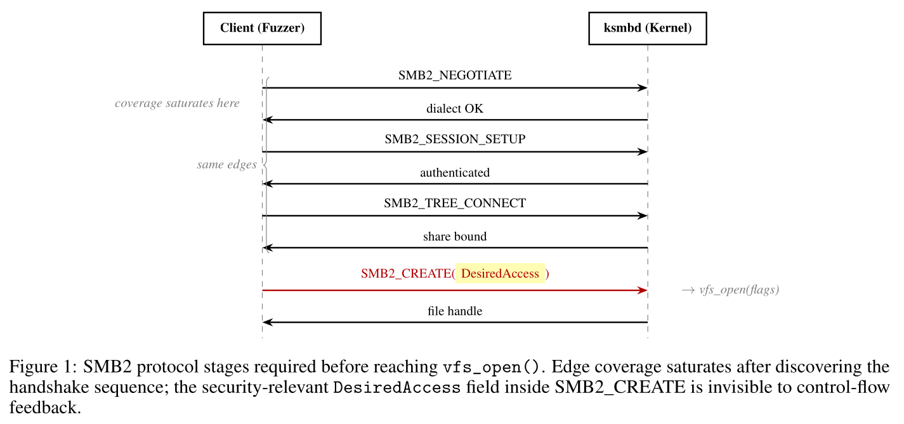
What happens after the handshake is where the bugs are, and it is
driven by field values rather than by branch structure. The whole
protocol prefix is discovered in the first minutes and then
contributes nothing; from that point on, the only thing distinguishing
one request from another is the contents of its fields — the
length and offset of the previous section, a
DesiredAccess mask, a CreateDisposition, a
name, a create-context blob. Edge coverage saturates. The fields keep
mattering.
DesiredAccess is the sharpest illustration, because its
effect is not even confined to the request that carries it.
smb2_create_open_flags() folds the mask down to a set of
open flags and never looks at
FILE_WRITE_DAC at all, so two
SMB2_CREATE requests differing in that one bit produce an
identical open_flags and an identical edge set. The bit
survives only in fp->daccess on the resulting handle,
where it is consulted thousands of lines away by a
different request:
if (!(fp->daccess & (FILE_WRITE_DAC_LE | FILE_WRITE_OWNER_LE)))
return -EACCES;smb2_set_info_sec(). A fuzzer that discarded the
request carrying it never builds the handle that reaches this line.
fs/smb/server/smb2pdu.c:8579
Two observation points, both at function boundaries:
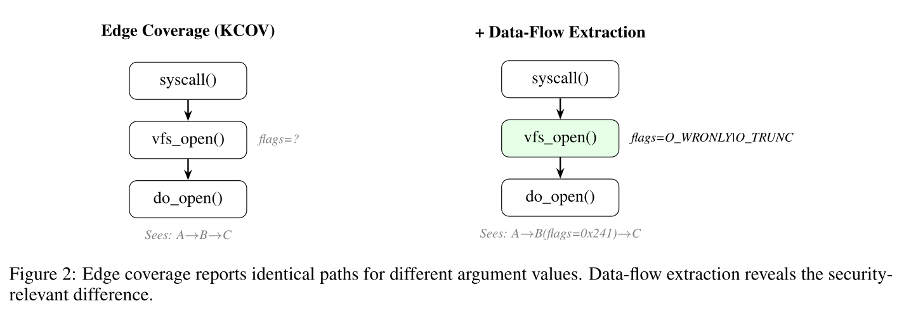
Nothing about the choice of boundary is accidental. A function boundary is the one place in a program where a value has a name that survives compilation, an index that the frontend assigned before the ABI touched it, and — for a structure — a type whose layout the debug information describes. It is also a place the instrumentation can reach without tracking anything: the values are live, in registers, at a point the pass can identify without analysis. Observing a value in the middle of a function would require deciding which value, and that decision has no natural answer.
It is worth being blunt about the boundary of the claim, because “data flow” is a term that promises much more than this delivers.
There is no taint tracking here, and no attempt at one. The instrumentation cannot tell you which input byte produced a value, which assignments contributed to it, or what the data-dependency graph of the program is. Those are all questions about provenance, and answering them costs either whole-program analysis or a shadow memory the size of the address space. What is recorded is narrower and much cheaper: a value was observed, at this function, in this position.
SanitizerCoverage has had a value-flavoured signal for years:
trace-cmp, which reports the operands of comparisons and
switch statements. The kernel consumes it as
KCOV_MODE_TRACE_CMP and syzkaller uses it to learn magic
constants. The obvious reviewer question, then, is what a second
value signal buys.
The two observe different things.
trace-cmp sees a value at the moment the program tests
it, which means it only sees values that are tested against something
in instrumented code. A length that is passed down four frames and
eventually used to size an allocation is never compared; a flags word
that is masked and stored into a structure is never compared; a
pointer that is dereferenced but not checked is never compared. Those
values are exactly the ones that determine whether a bug is reached,
and trace-cmp is silent about all of them.
Conversely trace-cmp sees things these modes do not:
values computed and tested entirely inside one function never cross a
boundary. The signals are complementary, and the kernel collector
described in Chapter 6 records
all three record kinds — argument, return and comparison —
into one ordered stream for precisely that reason.
Everything downstream of the compiler — the kernel collector, the libFuzzer value profile, any consumer someone writes later — agrees on exactly two function signatures and one decision rule about what their arguments mean. That contract is the design; the rest is plumbing.
void __sanitizer_cov_trace_args(uint64_t pc, uint32_t arg_idx, uint32_t size,
uint64_t val, uint64_t *offsets,
uint32_t num_fields);
void __sanitizer_cov_trace_ret(uint64_t pc, uint32_t size, uint64_t val,
uint64_t *offsets, uint32_t num_fields);
They differ in one parameter. trace_args carries
arg_idx, the zero-based source-level parameter index;
trace_ret does not, because a source function has one
logical return value and there is nothing to index. Everything else
is shared, which is deliberate: a consumer can implement one decoder
and call it from both entry points.
Note also what is not shared: the two are distinct symbols. A runtime never has to infer which kind of observation it is looking at from the shape of the data, because it is already in a different function. The kernel collector uses that directly — the ARG and RET record types are decided by which entry point was entered, not by inspecting the payload.
val is sixty-four bits that mean one of two completely
different things, and a third state says that there is nothing to
read at all. The discriminator is num_fields, and the
empty case is size.
size == 0void return, a value of a type the pass cannot widen.
The observation is still emitted, so that a consumer sees the full
parameter list — see
Section 3.4.
size > 0, num_fields == 0val is the value: its low size
bytes, zero-extended. This is the common case and it touches no
memory whatsoever.
size > 0, num_fields > 0val is the address of a size
byte object, and offsets points at a constant table of
num_fields pairs of {byte offset, byte size}
describing its fields, so that a consumer can read them out.
Only an object that already lives in memory is reported by address: a pointer to a struct, a by-value struct the ABI chose to pass indirectly, the caller-provided buffer of an indirect struct return. That restriction is the single most consequential sentence in the design, and Section 2.4 is about why.
Widening a runtime value to the sixty-four bits the callback takes is a per-type decision, and the pass makes it in one small function.
// ptrtoint widens or narrows to the requested type, so this also holds for a
// target whose pointers are narrower than 64 bits.
if (Ty->isPointerTy())
return {IRB.CreatePtrToInt(V, Int64Ty), DL.getPointerSize()};
if (Ty->isFloatingPointTy()) {
unsigned Bits = Ty->getPrimitiveSizeInBits();
V = IRB.CreateBitCast(V, IRB.getIntNTy(Bits));
Ty = V->getType();
}
if (!Ty->isIntegerTy())
return {nullptr, 0};
uint64_t Size = divideCeil(Ty->getIntegerBitWidth(), 8);
if (Size > sizeof(uint64_t)) {
// A value that does not fit is reported by its low bytes rather than not at
// all: they are what a comparison against it looks at first.
V = IRB.CreateTrunc(V, Int64Ty);
Size = sizeof(uint64_t);
} else {
V = IRB.CreateZExt(V, Int64Ty);
}getReportedValue(), the whole of the value
representation.
llvm/lib/Transforms/Instrumentation/SanitizerCoverage.cpp
In words: an integer is zero-extended (or, above sixty-four bits,
truncated to its low half); a pointer is reported as the address it
holds; a floating-point value is reported as its bit pattern. A
vector, or an aggregate the ABI passed in registers, returns
{nullptr, 0} and becomes a size == 0
observation.
This is bit-pattern observation, not numeric conversion, and for a fuzzing signal that is the right choice: two distinct doubles must produce two distinct observations, and the cheapest way to guarantee that is to never interpret the bits at all. The truncation of a 128-bit integer to its low half is a deliberate compromise rather than a clean answer, and it is one of the open questions in Section 11.2.
There is an obvious alternative design in which every value is reported by address: allocate a stack slot, store the value into it, hand the callback the slot's address, and let the consumer read the value out. It is uniform, it needs no discriminator, and it is what the first iteration of this work did. It is also unbuildable on x86-64 in a kernel.
Follow it once. The slot's address is handed to a callback, so the
slot escapes. An escaping stack object under KASan gets a redzone and
32-byte alignment. That alignment requirement realigns the frame,
which makes the backend reserve a base pointer. On x86-64 the base
pointer is RBX. A kernel function whose inline assembly
also claims RBX — a cpuid with an
"=b" output operand, an rdtsc that clobbers
it — then fails to compile outright:
error: inline assembly requires more registers than available
Interference usage of base pointer/frame pointer
The fix in the first iteration was a predicate,
canSpillTracedValues(), that knew about x86-64, about
RBX, and about inline assembly constraints — that
is, target register allocation policy inside SanitizerCoverage. The
fix in the current design is to never create the memory in the first
place, which means the pass needs to know none of that. The
regression test states the invariant as a single line:
; CHECK-NOT: alloca
The rest of that test instruments a function that clobbers
RBX, a function with a "=b" constraint, and
an ordinary function, and asserts that all three receive identical
instrumentation. That is the real content of the “values remain
values” principle: it is not an aesthetic preference, it is what
makes the modes portable.
pc is the address of the instrumented function. That is
all it is, and the list of things it is not is longer than the list
of things it is:
return
statement in a function reports the same pc.
In IR it appears as a constant expression, which is why the instrumentation costs no address computation at runtime:
call void @__sanitizer_cov_trace_args(
i64 ptrtoint (ptr @two_params to i64), i32 1, i32 4, i64 %3,
ptr null, i32 0)two_params, reported by
value.
llvm/test/Instrumentation/SanitizerCoverage/trace-args.ll
Collecting the gaps in one place, because they are the raw material of Chapter 11 and because a consumer that assumes any of them will be wrong:
| Not expressible | Consequence for a consumer |
|---|---|
| invocation identity | ARG and RET records cannot be paired reliably under recursion, asynchrony or record loss |
| call depth, parent invocation | a call tree is a heuristic, not a reconstruction |
| return-site index |
two return statements are indistinguishable
|
| piece index for a register aggregate |
several callbacks share one arg_idx with no way
to order or count them
|
| argument count, last-argument flag | no framing that says “this call's arguments end here” |
| readability or lifetime of an object | the consumer owns the decision to dereference, with no help from the compiler |
arg_idx claims to be a source-level parameter index. That
is a much stronger claim than it looks, because by the time the
SanitizerCoverage pass runs there is no source signature left —
only an IR signature that the ABI rewrote. Recovering the source
numbering is the most intricate part of the instrumentation and the
part with the least settled justification.
A function that returns a struct too large for registers does not, in
IR, return anything. The frontend rewrites it to take a hidden
pointer to a caller-provided buffer and return void:
Positional mapping is therefore wrong from the first step: IR argument
0 is a compiler invention and IR argument 1 is source parameter 0.
The same divergence appears for a C++ this pointer, for
an aggregate the ABI splits into two registers, and for an aggregate
it passes as a hidden pointer with byval. Any of those
shifts every subsequent index.
There is exactly one thing in the module that still knows the source
numbering: the debug metadata.
DILocalVariable::getArg() is assigned by the frontend
before ABI lowering, counting from one, and it keeps naming
the same source parameter no matter what the ABI subsequently does to
the signature. The pass walks the function's debug records, keys the
values it finds by that number, and reports
arg_idx = getArg() - 1.
; struct S sret_and_scalar(int x), returning the struct through a hidden
; struct-return pointer: that pointer is not a source-level parameter, so `x`
; keeps source index 0 rather than becoming the IR argument index 1.
define void @sret_and_scalar(ptr sret(%struct.S) %0, i32 %1) !dbg !18 {
entry:
#dbg_value(i32 %1, !22, !DIExpression(), !23)
ret void
}
; CHECK: call void @__sanitizer_cov_trace_args(
; CHECK-SAME: i64 ptrtoint (ptr @sret_and_scalar to i64), i32 0, i32 4,arg_idx 0.
llvm/test/Instrumentation/SanitizerCoverage/trace-args.ll
The consequence worth stating plainly is that a
runtime property of the instrumentation — what
arg_idx means — is derived from
debug metadata. That is unusual. Debug info normally affects
how you read a program after the fact, not what the program does.
Whether it is acceptable as an input to instrumentation semantics is
the first question in
Section 11.1.
Most of collectSourceParams() is not mapping; it is
declining to trust records that would produce wrong or invalid code.
Each filter exists because its absence broke a real build of an
instrumented KASAN kernel.
size 0; one reports a value.
An inlined callee's records.
// Only this function's own parameters are numbered for us. An inlined
// callee's parameters are numbered too, and its records may name our
// Arguments: kmalloc(size, flags) inlined into f(ptr, size) leaves
// #dbg_value(%size, "size", arg: 1) behind, which would otherwise be
// taken as a description of f's first parameter.
if (DVR.getDebugLoc() && DVR.getDebugLoc().getInlinedAt())
continue;
if (SP && Var->getScope() && Var->getScope()->getSubprogram() != SP)
continue;collectSourceParams()
The example in the comment is worth reading twice. After
kmalloc(size, flags) is inlined into
f(ptr, size), the module contains a record that names
our %size value as parameter 1 — of
the callee. Without the filter, f's first parameter is
reported as the wrong value entirely.
A #dbg_declare.
// A #dbg_declare names the parameter's storage rather than its incoming
// value. That storage is written by the prologue, which follows the trace
// call, so reading it here would report whatever the stack held.
if (DVR.isDbgDeclare())
continue;
This is the mechanical reason arguments need -O1 or
above to be meaningful. At -O0 the frontend describes
parameters by their stack slots, and those slots are written by the
prologue, which runs after the entry-block trace call.
The claim that -O0 is simply unusable is broader than
the evidence supports: a function can have a usable incoming
value record at -O0 too. The statement that holds is
that the representation the tests exercise is the optimized one.
See Section 11.1.
A complex DIExpression. A record
whose location is an expression that computes the value
— a field shifted out of a wider register, an offset applied to a
pointer — is refused, because only a location that is the value
itself can be reported. The check is a count:
DIExpression *Expr = DVR.getExpression();
std::optional<DIExpression::FragmentInfo> Fragment =
Expr->getFragmentInfo();
if (Expr->getNumElements() != (Fragment ? 3u : 0u))
continue;A value that does not dominate the call.
// Debug records are exempt from SSA dominance, so a record may name a
// value that is not available where the trace call goes. Reporting it
// would produce IR failing the verifier with "Instruction does not
// dominate all uses".
if (auto *Def = dyn_cast<Instruction>(V))
if (Def->getParent() != &EntryBB || Def->isTerminator())
continue;
When a parameter has no usable value, the pass reports it anyway with
size 0 rather than emitting nothing. The reason is a
consumer-side one. Compare the two record streams a consumer could
see across two runs of the same function:
with size-0 reporting without
arg0 = value arg0 = value
arg1 = (size 0) arg2 = value
arg2 = value
In the right-hand column a consumer cannot tell whether the function
takes two parameters or three, and cannot tell whether
arg2 in one run corresponds to arg1 in
another. In the left-hand column the distinction between
the parameter exists and its value is observable is
explicit. This is the same reasoning that makes
size == 0 a first-class state in
Section 2.2 rather than an
error.
Parameters reported this way include: one the optimizer removed
entirely, one interprocedural optimization proved dead and described
as poison, one whose describing record failed a
dominance check, and one of a type the pass cannot widen.
Debug information is not required. A function with no usable records
falls back to reporting its IR arguments positionally, with no field
tables. Both modes therefore remain usable on code built without
-g — at the price that what the consumer sees is
the ABI's view of the argument list, hidden parameters included.
The fallback is safer than attempting a partial reconstruction: it
reports something well-defined rather than something that looks like
a source parameter index and is not. For the kernel it is moot,
because CONFIG_KCOV_DATAFLOW_ARGS depends on
DEBUG_INFO. For a userspace consumer it is a real
configuration, and it is tested
(trace-args-no-debug.ll).
Put the last two sections together and an uncomfortable property
appears. -fsanitize-coverage=trace-args means
“report source parameters” on a build with usable debug
records, and “report ABI arguments” on a build without.
Same flag, same callback, different semantics.
It is worse than a difference of detail. For a
struct S *p parameter, usable type metadata means
num_fields > 0 and the consumer reads fields out of
the pointee; no type metadata means num_fields == 0 and
the consumer records the pointer value. The same parameter of the
same function is reported through two different branches of the
decision tree in Section 2.2
depending on how the translation unit was compiled.
A scalar is easy: it is sixty-four bits and it is done. A structure is where the design has to decide who reads memory, and the answer it arrives at splits along an ABI boundary rather than a source one, which is both its most interesting property and its most criticised.
When the compiler reports an object by address, it also emits a
constant table describing that object's fields so the consumer knows
what to read. The table is a flat array of
{byte offset, byte size} pairs:
; struct S { int a; long b; } is described by one {byte offset, byte size} pair
; per field. The table is shared by every value of that type, so both functions
; below referring to struct S must produce exactly one.
; CHECK: @__sancov_offsets_ = private unnamed_addr constant [4 x i64]
; CHECK-SAME: [i64 0, i64 4, i64 8, i64 8]
; CHECK-NOT: = private unnamed_addr constant [{{.*}} x i64]struct S { int a; long b; } as a table: field 0 at
offset 0 for 4 bytes, field 1 at offset 8 for 8 bytes.
llvm/test/Instrumentation/SanitizerCoverage/trace-args.ll
And the corresponding call, where size is the size of
the whole object rather than of a pointer:
; CHECK: %[[ADDR:[0-9]+]] = ptrtoint ptr %s to i64
; CHECK: call void @__sanitizer_cov_trace_args(
; CHECK-SAME: i64 ptrtoint (ptr @two_params to i64), i32 0, i32 16,
; CHECK-SAME: i64 %[[ADDR]], ptr @__sancov_offsets_, i32 2)void two_params(struct S *s, int x): parameter 0 is
reported as a 16-byte object at the pointer's value, with two
fields.
trace-args.ll
Note what the instrumentation does not do here: it does not
read the struct. It converts the pointer with
ptrtoint and passes the table. Every actual memory access
happens in the consumer, under whatever policy the consumer has. That
division is the subject of
Section 11.4.
The table is built from DWARF member descriptions, and three cases in
getFieldOffsets() are worth noting because a consumer
will meet all three:
uint64_t SizeInBits = Member->getSizeInBits();
if (!SizeInBits)
continue; // A flexible array member or an empty base class.
// The callbacks describe fields in bytes, so widen a bitfield to the bytes
// that hold it instead of reporting a zero-sized field.
uint64_t FirstByte = Member->getOffsetInBits() / 8;
uint64_t EndByte = divideCeil(Member->getOffsetInBits() + SizeInBits, 8);
Pairs.push_back(ConstantInt::get(Int64Ty, FirstByte));
Pairs.push_back(ConstantInt::get(Int64Ty, EndByte - FirstByte));getFieldOffsets()
num_fields can be smaller than the source
member count.
Tables are cached per DICompositeType and interned, so
every value of the same struct type in a module shares one table. The
CHECK-NOT in the listing above is what enforces that; the
cost of the feature in .rodata is one table per struct
type reported, not one per call site.
A void * or an int * has no field layout to
describe. Such a parameter is reported with
num_fields == 0 and val holding
the pointer value itself — not the pointee.
The justification is a boundary-of-responsibility one, and the commit
message states it directly: reporting the pointee of an arbitrary
pointer is a read the instrumentation has no business making. It is
also the honest answer. There is nothing in the type
int * that says the address is readable, that it points
at one int rather than none or a thousand, or that the
object is still alive.
A small struct passed by value —
struct { int x; int y; } on x86-64 — arrives as two
i32 values in registers. There is no object, so there is
no address, so there is nothing for a field table to describe.
The pass handles it by splitting the first-class aggregate and reporting each element on its own:
unsigned NumElements = Ty->isStructTy() ? Ty->getStructNumElements()
: Ty->isArrayTy() ? Ty->getArrayNumElements()
: 0;
if (NumElements)
for (unsigned I = 0; I != NumElements; ++I)
Out.push_back(getReportedValue(IRB, IRB.CreateExtractValue(V, I)));
else
Out.push_back(getReportedValue(IRB, V));getReportedValues().
SanitizerCoverage.cpp
All the resulting callbacks carry the same arg_idx,
because they are all the same source parameter. The field values are
observed; they are simply not split along source field boundaries the
way a struct in memory is. And what the consumer receives is:
(pc = foo, arg_idx = 0, size = 4, val = A, num_fields = 0)
(pc = foo, arg_idx = 0, size = 4, val = B, num_fields = 0)
This is the sharpest gap in the callback ABI, and it is not
theoretical: the kernel selftest viewer's call-tree rendering breaks
on register-split returns for exactly this reason — two
consecutive RET records at one pc cannot be
distinguished from a return followed by another call to the same
function. Section 10.4 has
the failure; Section 11.3 has
the question.
trace-ret covers both ABI return strategies, and the
indirect one requires the pass to report a value from a function that,
in IR, returns nothing at all.
| Strategy | What is reported |
|---|---|
indirect, through sret |
size = sizeof(struct),
val = the caller-provided buffer address,
num_fields = field count,
offsets = the layout table
|
| in registers |
one callback per register piece,
num_fields = 0, no piece index
|
void |
one callback with size = 0
|
trace-ret.ll.
Reporting the sret buffer rather than dropping the return
is the same source-fidelity decision as not counting the hidden
pointer as a parameter: from the source's point of view the function
returns a struct, so trace-ret reports a struct. A
consumer that only looked at the IR return type would see
void and record nothing.
Two modes, two insertion points, and a short list of places the pass
refuses to insert. The placement rules matter more than they look,
because one of them is a hard IR-legality constraint and another is the
source of a persistent misunderstanding about what
trace-args has to do with edge coverage.
trace-args emits one call per reported parameter value in
the function's entry block, as early as the values it reports permit.
“As early as permitted” is not the same as
“first instruction”: a value has to be defined before it
can be reported, and the dominance filter in
Section 3.3 is what keeps the
pass from trying otherwise.
trace_args per reported parameter at entry; one
trace_ret per instrumentable return, wherever the
returns are.
That the callback can land later than the first instruction has one
non-obvious consequence, and it is a kernel one: a function that opens
a user-access region and then does an unsafe_get_user()
— an asm goto, hence a block terminator — can
get the callback after the stac.
Section 6.8 is about what the
kernel has to do because of that.
trace-ret emits a call before every return — with
one exception that is not a policy choice but a rule about what IR is
allowed to look like:
// A musttail call has to stay adjacent to the return that forwards it, so
// there is nowhere to put the trace call.
if (auto *CI = dyn_cast_or_null<CallInst>(...);
CI && CI->isMustTailCall())
continue;InjectTraceForRet()
A musttail call and the ret that forwards
its result must remain adjacent, so there is no instruction slot
between them. The pass leaves such a return alone. A consumer will
therefore occasionally see an entry with no matching return, which is
another reason not to treat ARG/RET pairing as a guarantee.
SanitizerCoverage has a coverage-level axis —
func, bb, edge — that
answers “at what granularity is control flow recorded?”.
trace-args answers a different question and is not on
that axis at all. All three of
func,trace-args,
bb,trace-args and
edge,trace-args emit exactly one
trace_args call per parameter, in the entry block.
Changing the level moves the other mechanisms, not these.
The confusion comes from the driver. Used alone, either flag defaults
the coverage level to edge:
int InstrumentationTypes = CoverageTracePC | CoverageTracePCEntryExit |
CoverageTracePCGuard | CoverageInline8bitCounters |
CoverageTraceLoads | CoverageTraceStores |
CoverageTraceArgs | CoverageTraceRet |
CoverageInlineBoolFlag | CoverageControlFlow;
...
// trace-pc w/o func/bb/edge implies edge.
if (!(CoverageFeatures & InsertionPointTypes)) {
What that does not do is emit
__sanitizer_cov_trace_pc_guard per edge. The pass
deliberately excludes TraceArgs and
TraceRet from the condition that auto-enables the default
trace-pc-guard mechanism, so
-fsanitize-coverage=trace-args on its own produces
argument callbacks and nothing else. The wording
“implies edge coverage” invites the opposite reading, and
a CHECK-NOT: __sanitizer_cov_trace_pc_guard in the
CodeGen test would be the right way to pin the intended behaviour
down.
The inserted calls carry a synthetic debug location, supplied by
InstrumentationIRBuilder. This is not cosmetic: without
one, a function built with -g fails the verifier as soon
as inlining runs, with
inlinable function call ... requires a !dbg location.
It is the kind of detail that only shows up when the pass meets a real
optimisation pipeline rather than a test that runs
opt once.
Three layers name the same two modes, and it is useful to know which name belongs where:
| Layer | Flag |
|---|---|
| driver |
-fsanitize-coverage=trace-args,trace-ret
|
cc1 |
-fsanitize-coverage-trace-args,
-fsanitize-coverage-trace-ret
|
opt |
-sanitizer-coverage-trace-args,
-sanitizer-coverage-trace-ret
|
rustc |
-Cllvm-args=-sanitizer-coverage-trace-args,
-Cllvm-args=-sanitizer-coverage-trace-ret
|
SanitizerCoverageOptions::TraceArgs and
TraceRet are what the pass actually reads.
Both are counted as instrumentation types, so either satisfies the
driver's “-fsanitize-coverage= requires an
instrumentation type” check on its own, and
hasSanitizeCoverage() accounts for them so that either
flag alone is enough to schedule the pass.
kcov_dataflow is about 1160 lines in
kernel/kcov_dataflow.c whose job is to take a callback that
can fire from almost anywhere in the kernel and turn it into a record in
a buffer shared with user space, without faulting, without recursing,
without locking, and without corrupting anything when it declines. Most
of the file is the “without” list.
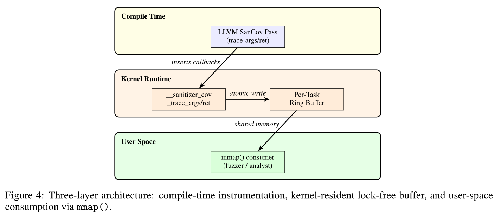
The prototype does not extend KCOV; it sits next to it. Every piece of state is independent:
| KCOV | kcov_dataflow | |
|---|---|---|
| device | /sys/kernel/debug/kcov |
/sys/kernel/debug/kcov_dataflow |
| ioctl namespace | 'c' |
'd' |
| buffer | PCs, or CMP records | ARG / RET / CMP records |
| per-task state | t->kcov* |
t->kcov_df* |
| lifecycle | own fd, own enable/disable | own fd, own enable/disable |
Both can be enabled on one task at once, and syzkaller and every other existing KCOV consumer is unaffected. Whether that separation should survive upstream — separate facility, a KCOV mode, or something more general — is Section 11.5.
A session is a refcounted object, struct kcov_dataflow,
with a back-pointer from the task. The shape mirrors mainline kcov's
struct kcov deliberately, because the races are the same
races:
struct mutex lock;
unsigned int size; /* buffer size in u64 words */
void *area; /* vmalloc_user() buffer */
struct task_struct *t; /* local-session owner */
refcount_t refcount;
u64 remote_handle;
bool cmp_key_local; /* under KCOV_DF_HAVE_CMP */
bool cmp_key_remote;The reference rules are worth memorising, because every teardown path depends on them:
open() allocates the object and sets the refcount to
one — that is the descriptor's reference.
KCOV_DF_ENABLE takes one, dropped by
KCOV_DF_DISABLE, by close()
from the enabling task, or by that task exiting.
kcov_df_remote_start() takes one, dropped by the
matching kcov_df_remote_stop().
kcov_df_put() frees on the last drop, and is only ever
called from sleepable task context, so the vfree() is
legal.
The property this buys is the one that matters: an instrumented
callback can never write through a freed buffer, no matter which
thread closes the descriptor. A sibling thread's close(),
a forked child, and task exit are all covered.
KCOV_DF_ENABLE's guard is the interesting one, because
every term in it prevents a specific failure:
if (!df->area || df->t || df->remote_handle ||
refcount_read(&df->refcount) != 1 || current->kcov_df) {
res = -EBUSY;
break;
}kcov_df_ioctl()
!df->area means no buffer yet;
df->t means a local session already exists;
df->remote_handle means the buffer is published for
remote capture; current->kcov_df means this task
already has a session on another descriptor. The
refcount != 1 term is the subtle one: it refuses a buffer
that still has remote workers in flight after
KCOV_DF_REMOTE_DISABLE, which is what guarantees the
atomic merge cursor never races the plain read-modify-write of
Section 6.4.
Buffer sizing: KCOV_DF_INIT_TRACK takes a count of
u64 words by value, accepts 2 up to
(128 << 20) / sizeof(u64) — a 128 MiB
cap — and drops the lock across the vmalloc_user(),
re-taking it and re-checking df->area so that a
double-init race returns -EBUSY rather than leaking.
In a local session there is exactly one writer — the
KCOV_DF_ENABLE guard guarantees it — so reserving
space needs no atomic at all:
static __always_inline notrace __no_sanitize_coverage bool
kcov_df_reserve(struct task_struct *t, u64 *area, u32 record_len,
unsigned long *start_index)
{
unsigned long count = READ_ONCE(area[0]);
*start_index = 1 + count;
if (count >= t->kcov_df_size ||
record_len > t->kcov_df_size - *start_index)
return false;
WRITE_ONCE(area[0], count + record_len);
return true;
}
Two properties fall out of the order of operations. It validates
first and commits area[0] only on success, so
area[0] is an exact high-water mark of written words and
no consumer ever sees an unwritten slot. And user space may reset
area[0] to zero at any time: since there is no subtract,
a racing reset can drop records but can never produce an
out-of-bounds store. That is mainline kcov's contract, deliberately
copied.
__always_inline is load-bearing rather than advisory.
kcov_df_trace_cmp() is on objtool's
uaccess_safe_builtin[] list, and objtool rejects
out-of-line calls from such a function, so the inlining cannot be left
to the optimizer.
kcov_df_write(), which is both callbacks' body. Every
early exit records nothing and corrupts nothing.
Layer one: a recursion guard in the sequence counter.
Bit 31 of task_struct::kcov_df_seq is a per-task
in-collector flag; the sequence number itself lives in the low
twenty-four bits, so incrementing it can never carry into the guard:
#define KCOV_DF_SEQ_GUARD BIT(31)
seq = (t->kcov_df_seq + 1) & KCOV_DF_HDR_SEQ_MASK;
t->kcov_df_seq = KCOV_DF_SEQ_GUARD | seq;kcov_df_next_seq() and the guard bit it preserves.
kernel/kcov_dataflow.c
Layer two: an inert-context test. This one is the interesting one, and it is two conditions in one line:
static __always_inline notrace __no_sanitize_coverage bool
kcov_df_inert_context(void)
{
return !in_task() || pagefault_disabled();
}
!in_task() is expected: hardirq, softirq and NMI context
would corrupt a per-task buffer reentrantly.
pagefault_disabled() is not obvious and it is what makes
the facility usable under a fuzzing workload at all. The reasoning, in
the file's own words:
kernel/kcov_dataflow.c
copy_from_kernel_nofault()— used bykcov_df_write()below to read traced pointers, and, crucially, by the ORC stack unwinder that KASAN runs on every slab free (set_track_prepare()→stack_trace_save()) — brackets its raw loads withpagefault_disable(), and those loads carry trace-cmp/trace-args instrumentation. Without this bail a single stack walk under a fuzzing + KASAN workload floods the collector with a callback per load and soft-locks the CPU.
The bit-31 guard does not cover this, because the unwinder's callbacks
are a fresh entry rather than re-entry nested inside the
collector. Testing pagefault_disabled() contains the
whole class of self-instrumentation storms inside this one file, with
no coverage exclusions needed in mm/ or
arch/. The cost is stated honestly in the same comment:
records are also dropped inside unrelated
pagefault_disable() regions —
kmap_atomic() on HIGHMEM, futex and perf callchain
probes. A per-task “in nofault region” flag would
decouple them at the cost of touching
mm/maccess.c.
Layer three: build-level exclusion.
kcov_dataflow.o is compiled without KCOV, KASAN, KCSAN,
UBSAN or KMSAN instrumentation, defines
DISABLE_BRANCH_PROFILING, and every callback and helper
is notrace __no_sanitize_coverage. The collector cannot
trace itself.
One more precaution sits alongside them:
kcov_df_fault_in_area() touches every page of the buffer
with READ_ONCE() at page stride when a session is
enabled, so a lazily populated vmalloc mapping does not
fault from inside an instrumented callback.
When num_fields is zero the kernel touches no memory: the
value arrived in a register, word 2 of the record is written as
zero, and the single value word is written directly. Nothing can fail.
When num_fields is non-zero, everything is a nofault
read — including the reads of the offset table itself, because
the table is a pointer the callback was handed and the collector
verifies nothing about it:
void *ptr = (void *)(unsigned long)val;
if (!size || !ptr || KCOV_DF_IS_ERR(ptr)) {
for (i = 0; i < num_fields; i++)
area[start_index + 3 + i] = KCOV_DF_MAGIC_BAD;
goto out;
}
for (i = 0; i < num_fields; i++) {
u64 off, sz, fval = KCOV_DF_MAGIC_BAD;
void *fa;
if (copy_from_kernel_nofault(&off, &offsets[i * 2],
sizeof(off)) ||
copy_from_kernel_nofault(&sz, &offsets[i * 2 + 1],
sizeof(sz))) {
area[start_index + 3 + i] = KCOV_DF_MAGIC_BAD;
continue;
}
fa = (void *)((unsigned long)ptr + off);
fval = 0;
if (sz > sizeof(fval))
sz = sizeof(fval);
if (copy_from_kernel_nofault(&fval, fa, sz))
fval = KCOV_DF_MAGIC_BAD;
area[start_index + 3 + i] = fval;
}kcov_df_write()
A NULL or an ERR_PTR the callee received is
detected up front —
KCOV_DF_IS_ERR(p) is
((unsigned long)(p) >= (unsigned long)-4095UL) —
and every value word becomes KCOV_DF_MAGIC_BAD. A field
whose read faults becomes KCOV_DF_MAGIC_BAD on its own,
leaving its siblings intact. Field sizes are clamped to
sizeof(u64), and num_fields is clamped to
KCOV_DF_MAX_VALS before the reservation, so the loop is
bounded by the words actually reserved and the record length cannot
wrap.
This is the concrete answer to the question the userspace runtime leaves open: the kernel treats a compiler-described object as an address that might be readable and never assumes more than that. It is the only consumer in the prototype that does.
Comparison records need no new compiler mode. The existing
__sanitizer_cov_trace_cmp*() and
trace_switch() callbacks in kcov.c are
routed through one inline in <linux/kcov.h> that
feeds both collectors:
write_comp_data(...); /* mainline kcov */
if (static_branch_unlikely(&kcov_df_cmp_key) &&
current->kcov_df_enabled)
kcov_df_trace_cmp(...); /* dataflow */kcov_trace_cmp(), condensed.
include/linux/kcov.h
Two things follow. kcov.c no longer references the
dataflow side at all, which keeps the patch's footprint in mainline
kcov small. And every kernel built with
CONFIG_KCOV_ENABLE_COMPARISONS now has a second consumer
on that hot path, gated by a static key so that it costs nothing when
no dataflow session is live. Whether the KCOV maintainers accept a
second consumer there is an integration question, not a technical
one.
kcov_check_handle() also moves into
<linux/kcov.h> as a static inline, so both
facilities validate remote handles against the same partitioned
namespace and the same handle value can be registered with both
KCOV_REMOTE_ENABLE and
KCOV_DF_REMOTE_ENABLE to collect both kinds of coverage
around one region.
The two compiler-visible entry points are listed in objtool's
uaccess_safe_builtin[], next to their mainline peer
write_comp_data(). They qualify on the same grounds:
notrace, __no_sanitize_coverage, no locks,
no allocation, storing only into the task's own buffer.
But being on that list has a consequence. objtool validates a listed
function with AC set and rejects any out-of-line call
from it — and kcov_df_write() calls
copy_from_kernel_nofault(). Combine that with the
placement detail from Section 5.1
— the trace-args call can land after a stac in a
function that opens a user-access region and then does an
unsafe_get_user() — and the build fails with
call to __sanitizer_cov_trace_args() with UACCESS enabled.
The fix follows the kasan_report() pattern: bracket the
whole record write in
user_access_save() /
user_access_restore(), which clears AC for
the duration and keeps SMAP and PAN in force while the collector runs.
It compiles to nothing on architectures without the feature.
Instrumentation is opt-in per object, with a whole-kernel escape hatch:
# drivers/android/Makefile -- one object
KCOV_DATAFLOW_binder.o := y
KCOV_DATAFLOW_binder_alloc.o := y
# fs/Makefile -- a whole directory
KCOV_DATAFLOW := y
scripts/Makefile.kcov defines
CFLAGS_KCOV_DATAFLOW = -fsanitize-coverage=trace-args,trace-ret
plus the matching RUSTFLAGS_KCOV_DATAFLOW, and adds
-fno-inline under
CONFIG_KCOV_DATAFLOW_NO_INLINE so that every function
boundary survives. KCOV_INSTRUMENT := n still excludes
noinstr objects.
The Kconfig symbols gate on a compiler probe, which is what keeps a stock toolchain from failing:
| Symbol | Depends on / effect |
|---|---|
KCOV_DATAFLOW_ARGS |
KCOV, CC_IS_CLANG,
DEBUG_INFO,
cc-option for
-fsanitize-coverage=trace-args, and a matching
rustc-option when RUST is set
|
KCOV_DATAFLOW_RET |
the same, for trace-ret |
KCOV_DATAFLOW_NO_INLINE |
adds -fno-inline to instrumented objects
|
KCOV_DATAFLOW_INSTRUMENT_ALL |
whole kernel; the help text warns about code size and boot time |
What user space sees is an array of u64 words containing
variable-length records in execution order. The format is small enough
to hold in your head, and it is where the callback ABI gets compressed
into something narrower — which is the part a UAPI review will
find first.
Word zero is a counter; everything after it is records, back to back.
area[0] number of record words written after area[0]
area[1 + n ..] records, back to back, each:
[0] header packed: seq, type, nvals, size, arg_idx
[1] pc instrumented function, KASLR offset removed
[2] addr ENTRY/RET: address the fields were read from,
0 when the record carries the value itself
CMP: the comparison type
[3 .. 3 + nvals) value words
Every record is 3 + nvals words, which is what
KCOV_DF_RECORD_WORDS(nvals) computes.
nvals is at least one: a scalar observation carries one
value word, a struct carries one per field, a comparison carries two
operands.
pc has the KASLR offset removed, the same as the PCs
mainline kcov records, so it symbolises directly against
vmlinux. To resolve it against
/proc/kallsyms on the running kernel you add the runtime
offset back — which is exactly what the selftest viewer does.
63 56 55 48 47 32
+-----------------------+--------------+-----------------------------+
| arg_idx (8) | size (8) | nvals (16) |
+-----------------------+--------------+-----------------------------+
31 28 27 24 23 0
+-------------+--------+---------------------------------------------+
| type (4) | unused | sequence (24) |
+-------------+--------+---------------------------------------------+KCOV_DF_HDR_SEQ(),
_TYPE(), _NVALS(),
_SIZE() and _ARGIDX().
The type field is four bits with three values:
KCOV_DF_TYPE_CMP (0xC),
KCOV_DF_TYPE_ENTRY (0xE) and
KCOV_DF_TYPE_RET (0xF). It is written by the
kernel from whichever callback was entered, so a consumer reads the
type and then parses the type-specific payload.
Two narrowings happen here that the callback ABI does not have.
size and arg_idx arrive as
u32 and are stored in eight bits each, clamped to 255.
For arg_idx that is harmless. For size it is
not: in object-address mode size is the size of the
whole object, and a kernel structure larger than 255 bytes is
entirely ordinary.
The sequence number is twenty-four bits, so it wraps at 16,777,215. With a 1M-word buffer and a four-word minimum record a single capture holds roughly 262,000 records, so wrap is unlikely in the current model — but nothing in the UAPI says whether the counter is modulo-224 or resets on buffer init, and remote collection and long sessions make the question real.
A scalar argument, nvals = 1, four words:
[0] header type=ENTRY nvals=1 size=4 arg_idx=1 seq=101
[1] pc canonicalised address of foo
[2] 0 the record carries the value itself
[3] 0x1000 the valuefoo(..., int len) called with
len = 4096.
A two-field struct argument, nvals = 2, five
words:
[0] header type=ENTRY nvals=2 size=16 arg_idx=0 seq=102
[1] pc canonicalised address of bar
[2] addr the address the fields were read from
[3] 0x11 field 0
[4] 0x22 field 1bar(struct S *s, ...), expanded by the kernel.
A comparison, nvals = 2, five words:
[0] header type=CMP nvals=2 size=8 arg_idx=0 seq=103
[1] pc canonicalised address of the comparison
[2] cmp_type KCOV_CMP_SIZE() / KCOV_CMP_CONST bits from linux/kcov.h
[3] arg1 left operand
[4] arg2 right operand
pos = 1;
while (pos < 1 + area[0]) {
hdr = area[pos];
nvals = KCOV_DF_HDR_NVALS(hdr);
...
pos += KCOV_DF_RECORD_WORDS(nvals);
}
The safety argument for that loop is two sentences long:
area[0] never exceeds the buffer size minus one, and
every counted word has been written. So a consumer that walks
area[0] words never leaves its mapping and never reads a
slot the kernel has not filled. Both properties come from the
validate-then-commit order in
Section 6.4.
What the loop does not guarantee is that every word it reads is a
valid header. User space may reset area[0] to zero
mid-run, which leaves stale records in place; the viewer's answer is
to resynchronise by advancing one word and retrying. That works after
a single corrupted word, and it is optimistic: an arbitrary
value word can look like a plausible header. The only
validation currently applied is that the type is known,
nvals ≥ 1, the record fits, and
pc != 0. Header bits 24–27 are unused and could
carry a magic or version nibble to make resynchronisation reliable.
KCOV_DF_MAGIC_BAD is 0xBADADD85, and a value
word holding it means one of two different things:
| Header | Meaning | Whose limitation |
|---|---|---|
size == 0 |
the compiler had no value to report for this parameter | compile time |
size > 0 |
a described object could not be read — NULL,
ERR_PTR, freed, poisoned, unmapped
|
run time |
A consumer should render these differently —
UNAVAILABLE against FAULT — because
they point at different problems. The first says the build could not
observe the parameter; the second says the callee received a pointer
it could not follow, which for contract checking is frequently the
interesting finding rather than an error. The current viewer collapses
both to FAULT; see
Section 10.4.
With PCs symbolised and records nested by depth, a capture reads as a
call tree with values attached. This is a real capture of
open("/etc/shadow", O_WRONLY|O_TRUNC):
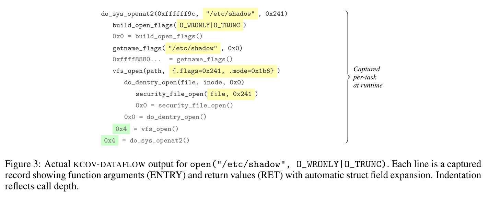
Two things in that picture are worth pointing at.
vfs_open(path, {.flags=0x241, .mode=0x1b6}) is a struct
argument the kernel expanded into its fields; the fuzzer sees
0x241, not an opaque address. And the return values are
present at every level, so the capture records not only what went in
but what came back — which is what makes post-mortem contract
checking possible rather than just input coverage.
The tree structure, though, is a rendering convenience. The records
carry a sequence number, a function pc and a parameter
index; they do not carry call depth or invocation identity. The
indentation is inferred by a stack heuristic in the viewer, and
Section 11.3 is about the
cases where it cannot be right.
A syscall that hands work to a kworker leaves the interesting values
being observed on a task that has no session. Mainline kcov solved this
with remote handles; kcov_dataflow reuses the handle
namespace and then solves the buffer problem differently, because
variable-length records from many workers cannot share a non-atomic
cursor.
The protocol is four steps, two in user space and two in the kernel module being traced:
KCOV_DF_REMOTE_ENABLE, passing a pointer to a
__u64 handle encoded by
kcov_remote_handle();
kcov_df_remote_start(handle) at
work entry;
kcov_df_remote_stop() at work exit;
KCOV_DF_REMOTE_DISABLE.
Published buffers live in a small hash table
(DEFINE_HASHTABLE(kcov_df_remote_map, 4)) keyed by
handle, under kcov_df_remote_lock. One handle per
descriptor; a duplicate handle is -EEXIST; publishing
while a local session is active is -EBUSY.
kcov_df_remote_start() does not point the worker at the
shared buffer. It gives the worker a private scratch area of
KCOV_DF_REMOTE_WORDS = 1 MiB words — 8 MiB
— and wires the task's fields at it.
So every per-record write in the system, local or remote, goes
through the same single-writer kcov_df_reserve(). There
is no atomic on the path a callback takes. Overflowing a scratch drops
that worker's excess records and nothing else.
Scratch areas come from kcov_df_scratch_pool when one is
idle and are vmalloc()ed otherwise, returned to the pool
on stop, and reclaimed by a registered shrinker
(shrinker_alloc(0, "kcov-df-scratch")). That is what
keeps memory bounded across kworker churn without pinning 8 MiB
per worker forever.
kcov_df_remote_stop() clears the per-task pointers
first, so the task can no longer enter
kcov_df_write(), and only then merges:
/* clamp n = scratch[0] to KCOV_DF_REMOTE_WORDS - 1 */
capacity = df->size - 1;
do {
count = atomic64_read(cursor);
if (count > capacity || n > capacity - count)
return; /* no room: drop this block */
} while (!atomic64_try_cmpxchg(cursor, &count, count + n));
memcpy(&area[1 + count], &scratch[1], n * sizeof(u64));kcov_df_merge(), condensed. Each merge claims a
disjoint range, so concurrent merges need no lock.
kernel/kcov_dataflow.c
A user-space reset of area[0] simply makes the
compare-exchange fail and the loop re-read. The scratch pointer used
for the merge is the one pocketed at start, not a fresh hash lookup,
so an already-unpublished entry cannot strand a reference.
kcov_df_remote_start() returns early if
!in_task(). If the task already has a session it
WARN_ON_ONCE(1)s and merely increments
kcov_df_remote_depth without re-initialising or taking a
second reference, so nested coverage is attributed to the outer handle
— imprecise, but safe. Teardown happens only on the outermost
stop. Inside a local session the depth stays zero, so a stray inner
stop is a no-op.
Task exit has two branches. If kcov_df_remote_depth > 0
— a kworker exited between start and stop, which should not
happen — the state is cleared defensively, the scratch is
vfree()d, its partial records discarded, and the
reference dropped. Otherwise the local session is unwired,
df->t is set to NULL under df->lock
(which matters, because a later ioctl or close() compares
it against current), and the reference is dropped.
kcov_df_cmp_key gates the dataflow branch of
kcov_trace_cmp(). It is refcounted through two separate
flags on the session, cmp_key_local and
cmp_key_remote, and the reason is recorded in the code:
with a single shared flag, a KCOV_DF_DISABLE could drop
the key while a remote handle was still published, silently losing the
CMP records of live workers.
static_branch_inc() and dec() are only ever
called from ioctl, close() and do_exit()
under df->lock — never from
kcov_df_remote_stop() and never from the last
kcov_df_put(). That placement is deliberate: a
subsystem's worker path must not end up under
cpus_read_lock() and jump_label_mutex.
The same two callbacks drive a completely different runtime in user space. This matters for more than convenience: a compiler feature whose only consumer is one out-of-tree kernel patch is a hard sell, and a feature that demonstrably serves libFuzzer as well is a different argument.
sanitizer_common provides weak, empty definitions of both
callbacks, so a program built with the flags links and runs with no
runtime consuming the values:
SANITIZER_INTERFACE_WEAK_DEF(void, __sanitizer_cov_trace_args, void) {}
SANITIZER_INTERFACE_WEAK_DEF(void, __sanitizer_cov_trace_ret, void) {}
The declarations in sanitizer_interface_internal.h follow
the existing convention for this family — parameterless, with
the real contract in a comment above them — and both get entries
in sanitizer_coverage_interface.inc. A strong definition
anywhere in the link overrides the default, which is the whole
extension mechanism.
libFuzzer provides strong definitions of both and routes them into one function:
HandleDataflow(). Returns get a location of their own
because they share a pc with the arguments of the same
function.
auto Fold = [&](uint32_t Field, uint64_t V) {
ValueProfileMap.AddValueModPrime((PC * 3 + Loc) ^ (Field * 0x9E3779B1u) ^
V);
};
if (!NumFields || !Offsets) {
Fold(0, Val);
return;
}
// Val is the address of an object and Offsets holds {byte offset, byte size}
// pairs, one per field of it. Field numbers start at one to stay distinct
// from a whole value.
const uint8_t *Object =
reinterpret_cast<const uint8_t *>(static_cast<uintptr_t>(Val));
for (uint32_t I = 0; I < NumFields && I < kMaxDataflowFields; I++) {
The fold mixes four things, and all four are load-bearing: the
function PC, the location Loc (argument
index, or kReturnLoc for a return), the field number, and
the value.
| Observation | Feature |
|---|---|
parse_length(42) |
distinct from |
set_flags(42) |
— different PC |
foo(42, x) |
distinct from |
foo(x, 42) |
— different Loc |
foo(...) returning 42 |
distinct from foo(42, ...) —
Loc = 0xFFFF
|
| field 0 of a struct == 42 |
distinct from field 1 == 42 — different
Field
|
Field numbers start at one so that “field 0 of the object”
and “the whole direct value” stay distinct features. And
kReturnLoc is 0xFFFF:
// Returns share the PC with the arguments of the same function, so they need
// a location of their own; no function has this many parameters.
const uint32_t kReturnLoc = 0xFFFF;
Two policies bound the work the runtime does on every call.
Size == 0 is ignored outright — there is
no value to observe, so no feature is produced. And
kMaxDataflowFields is 32: fields beyond the thirty-second
are silently not folded.
Note where that cap lives. The compiler passes the full table; the
runtime chooses how much of it to use. Keeping the limit on the
consumer side rather than in the ABI is the right division, and it
does mean two consumers can disagree about how much of a large
structure they observe — the kernel's own limit is
KCOV_DF_MAX_VALS, which is 65535.
There is also a cost question that the opt-in flag does not answer.
-use_value_profile=1 controls whether libFuzzer
uses the resulting features for corpus selection; the
callbacks fire and the folding happens either way. Whether
HandleDataflow() should early-return when value profiling
is inactive is unresolved.
An opaque pointer takes the direct-value path, which means real
addresses enter ValueProfileMap. In user space those move
with ASLR, with allocator layout, and with heap state, so the same
logical execution produces different features on different runs. That
is feature explosion and poor reproducibility at the same time.
Candidate policies, none of which the current patch applies:
This is squarely a runtime policy question rather than an ABI one, which is an argument for deciding it separately from the callback contract — and an argument for splitting the compiler-rt patch in two, so that disagreement about libFuzzer policy cannot block the minimal interface support.
Overriding the weak defaults is the whole extension story, and it is short enough to show completely:
extern "C" void __sanitizer_cov_trace_args(uint64_t pc, uint32_t arg_idx,
uint32_t size, uint64_t val,
uint64_t *offsets,
uint32_t num_fields) {
if (size == sizeof(int) && num_fields == 0)
consume_argument(pc, arg_idx, val);
}int
arguments.
The end-to-end test in the series is this pattern: a program defining
both callbacks, an add(41, 2) call, and expected output
ARG idx=0 val=41 / ARG idx=1 val=2 / RET val=43. It
builds at -O2 for the reason given in
Section 3.3.
A design argument is only as good as what can be demonstrated. This chapter is the inventory: what the compiler tests pin down, what the kernel selftests actually verify, and — more usefully — the places where the tooling is wrong in ways that turn out to be evidence about the ABI rather than bugs in the tooling.
Seven IR tests, decomposed by failure mode rather than by feature:
| Test | What it fails on |
|---|---|
trace-args.ll |
basic argument reporting, pointer and floating-point representation, a dead parameter, the field offset table and its reuse |
trace-args-abi.ll |
source numbering across sret insertion and
aggregate splitting, byval, register pieces
|
trace-args-dominance.ll |
a debug record naming a value defined after the call site |
trace-args-inlined.ll |
an inlined callee's parameter records being taken for ours |
trace-args-no-debug.ll |
the positional IR-argument fallback |
trace-no-spill.ll |
any configuration emitting an alloca, including
for functions whose inline assembly claims
RBX
|
trace-ret.ll |
scalar, pointer, sret, register aggregate,
void, and musttail returns
|
Plus the Clang side: fsanitize-coverage.c for the driver
accepting the new values and forwarding the cc1 flags,
and sanitizer-coverage-trace-args-ret.c for the CodeGen
pipeline emitting each callback only for the flag that asks for it.
What is missing from this list is a behavioural test of libFuzzer's
fold — that Size == 0 produces no
feature, that argument 0 and argument 1 produce different features,
that an argument and a return produce different features, that only
thirty-two fields are processed — and a link-only test proving
the weak defaults suffice.
Six test targets under
tools/testing/selftests/kcov_dataflow/, wired into a
standard kselftest target:
| Target | What it exercises |
|---|---|
user_ioctl |
nine TAP cases on the ioctl interface: argument checking,
double init, mmap before init, ENABLE/DISABLE pairing, a
second fd getting -EBUSY, record validity after
a syscall
|
binderfs |
the binder driver's ioctl boundaries under live recording;
SKIPs without CONFIG_ANDROID_BINDERFS
|
eight_struct_args_c |
one to eight struct pointer arguments; value-nested and
pointer-linked towers on stack, kmalloc and
vmalloc; pointer forwarding; a struct return
|
eight_struct_args_rust |
the same shapes in Rust, with CONFIG_RUST=y |
rust_ffi_contract |
a deliberate contract violation across the Rust/C FFI boundary, checked at both boundaries |
rust_kworker_remote |
kcov_df_remote_start/stop() from kworker context
across three work phases
|
README.rst saying what it
exercises.
The property that makes these useful as evidence rather than as smoke
tests is stated in the commit message: a test passes only when the
data came back intact, not merely when records appeared.
test_modules.py compares captured arguments, expanded
struct fields and return values against the values the module used:
c.eq("ffi_alloc_buf ENTRY arg indexes", sorted(by_arg), [0, 1, 2, 3])
c.eq("ffi_alloc_buf RET (claims success)",
rets(cap, recs, "ffi_alloc_buf"), [0])
c.eq(f"sf_{n} arg[{k}] expanded fields", vals,
[0x11 * (j + 1) for j in range(k + 1)])
Two design decisions in the harness are worth copying. Modules that
were not built report SKIP rather than failing, so a tree without a
Rust toolchain still runs the C tests. And the module is loaded
before recording is enabled, which under
CONFIG_KCOV_DATAFLOW_INSTRUMENT_ALL excludes the module
loader's own instrumented traffic from the capture.
The runner is built on an interactive viewer that does the whole
collection cycle: finit_module() the module, enable
recording (KCOV_DF_ENABLE, or
KCOV_DF_REMOTE_ENABLE with --remote), write
the module's debugfs trigger file, unload the module, and decode.
Decoding is more work than it sounds, mostly because of addresses. The
recorded PCs have the KASLR offset removed, so symbolising them
against /proc/kallsyms means adding the running kernel's
offset back — runtime _text minus the link-time
_text from System.map, nm, or a
per-architecture default. It also symbolises against a
vmlinux with addr2line when one is
available, resolves module addresses against
/sys/module/<name>/sections/.text, and demangles
Rust v0 symbols. Output is a call tree, or a flat record list with
--raw.
Four defects, presented here because three of them are really statements about the ABI.
CMP records are dropped during parsing. The parser advances past them:
if rtype == DF_TYPE_CMP:
pos += RECORD_HDR_WORDS + num_vals
continue
So comparison records appear in neither --raw nor the
call tree, even though the facility records them and the documentation
describes an ARG/RET/CMP stream. This one is a plain bug and should be
fixed before the series is merged.
RET records are printed with an argument index.
print_raw() reads the arg_idx bits
unconditionally, so a return renders as
foo arg[0](4) = 0x2a — which reads as “return
of argument 0”. The header bits are there for every record;
whether they mean anything depends on the type.
A structured return is only checked at its first field.
The helper returns r["val"], so a return carrying
[field0, field1, field2] is verified by
field0 alone, and one test asserts only that a
RET record exists. That is weaker than the
commit message claims, and it is fixable in the harness.
A register-split return corrupts the call tree. And
this one is not fixable in the harness. print_tree()
groups consecutive same-PC ENTRY records, explicitly to
handle register-split arguments. RET has no equivalent
grouping, so the first RET pops the function off the call
stack and the second piece finds no matching entry:
piece_A = foo(args)
piece_B = foo()
The root cause is the missing piece framing from
Section 4.4. Two consecutive
RET records at one pc cannot be
confirmed to be pieces of one return: they could equally be a
return followed by another call to the same function, or recursion. No
amount of viewer cleverness recovers information the callback never
sent. That is the clearest piece of evidence in the whole prototype
that the ABI is missing something.
There are no overhead numbers in this work, and that is a real gap rather than an omission from this book. The cost model has obvious multipliers — one callback per source parameter, one per return site, several per register aggregate, up to thirty-two field reads per struct — and no measurements of any of them. Specifically absent:
CONFIG_KCOV_DATAFLOW_INSTRUMENT_ALL;
The last one is the important one. Everything in this book argues that the signal should help; nothing in it demonstrates by how much. A reviewer is entitled to ask for that number before agreeing to carry the interface, and the honest answer today is that it has not been produced.
The prototype demonstrates an end-to-end path from compiler instrumentation to two independent runtimes. What it does not do is settle the interfaces along that path, and this chapter separates the two so that neither gets credit for the other.
First, what is not in question. These work, they are tested, and they are not what needs discussion:
| Settled | Still a design question |
|---|---|
| argument and return insertion points | source-level against ABI-level semantics |
| by-value transport, no spill | the debug-info dependency |
sret handling |
the shape of the callback |
| register aggregates observed at all | aggregate piece identity |
| the no-debug fallback exists | object-address read semantics |
| per-task ordered records, remote capture | where this lives, and what is stable |
The central question, stated as bluntly as it deserves: should a SanitizerCoverage callback promise source-level semantics when that promise depends on debug metadata?
And its corollaries. Is SanitizerCoverage the right place to be
interpreting DILocalVariable,
DIExpression and DISubprogram in order to
reconstruct a source signature? Is it acceptable for one flag to
deliver a source-parameter view with debug info and an IR-argument
view without it? How much may instrumentation correctness depend on
the quality of debug-value preservation through optimisation?
The prototype's answer is “source level when the records allow it, ABI level otherwise”, with the filters of Section 3.3 as the definition of “allow”. The complexity of those filters is itself evidence that this is expensive to get right. The alternative — commit to ABI-level arguments and let the consumer map them — is simpler in the compiler and pushes a harder problem to every consumer.
Before the -O0 claim is generalised in documentation it
wants a matrix: C at -O0, -O1,
-O2 with -g; C++ at -O0 and
-O1; Rust debug and optimized; across scalar arguments,
pointer arguments, struct pointers, by-value aggregates and
sret — recording in each case which debug records
exist, whether collectSourceParams() finds a value,
whether the fallback runs, and whether the reported value is correct.
Four representation questions, in descending order of how likely they are to come up:
num_fields do two jobs?uint64_t enough?offsets be const?const uint64_t * describes the contract.
The binary ABI does not change, but the declaration appears in
Clang's documentation, compiler-rt, internal comments, tests and the
kernel prototypes, and today they do not all agree.
return in a function reports the same
pc. Documentation that says “before every
return” invites consumers to expect a site identity that does
not exist.
Two related gaps, both about framing rather than about values.
Piece identity. A register-split aggregate produces
several callbacks under one arg_idx with no piece index,
no source bit offset and no total count. The consequence is concrete
and demonstrated: Section 10.4.
Should the ABI carry a piece index, or should the compiler flatten
fields and issue callbacks with the values already extracted, or should
register and memory aggregates be unified into one representation?
Invocation identity. pc is function
identity, not dynamic invocation identity. Stack-like ARG/RET pairing
works for a well-nested, drop-free stream and breaks on recursion,
multiple return sites, asynchronous execution, remote workers, dropped
records, nested callbacks and buffer overflow. Under recursion the
stream is only this:
seq 100 ARG pc=foo val=3 seq 103 RET pc=foo val=1
seq 101 ARG pc=foo val=2 seq 104 RET pc=foo val=2
seq 102 ARG pc=foo val=1 seq 105 RET pc=foo val=6foo. Nothing in the records says
which return belongs to which entry.
What the stream guarantees is the kind and the order of observations. It does not guarantee complete dynamic pairing, and a consumer should not be encouraged to think otherwise. Adding a call-instance ID, a call depth or a parent-invocation ID would change that, at a cost in both callback size and per-call work.
In object-address mode the compiler says: here is an address, and here
is the layout of what should be there. It does not say that the address
is readable, that the object's lifetime is valid, or that nothing is
concurrently modifying it. A parameter merely
typed struct S *p is not a guarantee that it
points at a struct S.
The two consumers in the prototype answer this differently, and the asymmetry is the argument:
| Consumer | Read policy |
|---|---|
| kernel |
copy_from_kernel_nofault() for every read
including the offset table; NULL and ERR_PTR
rejected up front; a failure becomes
0xBADADD85 for that field only
|
| libFuzzer |
__builtin_memcpy from the address, bounded only
by the 32-field cap
|
So: does type and layout metadata provide enough justification for reading an object? Who owns lifetime and fault-safety policy — the compiler, by only describing objects it can prove readable, or the runtime, by defending itself? The kernel's answer is the second one, and it is only available because the kernel has a primitive for it.
The prototype is a separate facility: its own debugfs node, its own ioctl namespace, its own buffer, its own per-task state. That choice was made to avoid disturbing the existing KCOV ABI and syzkaller's use of it, and it succeeds at that.
The three options for upstream are a separate KCOV-adjacent facility,
a KCOV mode reached through the existing device, or a place in more
general tracing infrastructure. Related decisions that follow from it:
whether a second consumer on the trace-cmp hot path is
acceptable (Section 6.7); whether
sharing the remote handle namespace with mainline kcov through
kcov_check_handle() is the right coupling; and whether a
remote API that requires sleepable context is enough, given that it
rules out the softirq pattern mainline kcov uses.
The record format compresses the callback ABI, and every compression is a question:
size and arg_idx.
size is the whole object size in object-address mode
and structures larger than 255 bytes are ordinary. The
implementation clamps rather than truncates, which avoids the
collision with “unavailable”, but the true size is
unrecoverable and untested.
nvals-based framing works
today (3 + nvals words). An explicit byte-granular
record_size would survive future record kinds better.
pagefault_disable() region all lose records silently,
and a consumer cannot tell a short capture from a truncated one.
FAULT from UNAVAILABLE
explicitly, rather than leaving a consumer to infer it from
size?
Overhead is why per-object opt-in exists and why
CONFIG_KCOV_DATAFLOW_INSTRUMENT_ALL carries a warning.
But selectivity today is coarse: a Makefile variable per object or per
directory, and nothing finer.
Mechanisms a real deployment is likely to want, none of which exist: an allowlist or denylist, a function attribute, subsystem selection, sampling, a cap on arguments reported per function, filtering of pointer values. The 32-field cap is a start; it is one dimension of several.
And on the userspace side, the cost of the callbacks is paid whether
or not -use_value_profile is on, which is the wrong
default for a feature that is opt-in at the consumer.
Finally, the question that subsumes the others. There are two candidate stable interfaces here:
/sys/kernel/debug/kcov_dataflow record format.
Neither should be promised yet. Both are cheap to change now and expensive to change once a fuzzer depends on them, which is the ordinary reason to have this conversation before rather than after. The prototype exists to make the conversation concrete: it is evidence about what the interface has to be able to express, not a proposal that the current expression is final.
The one thing the prototype does settle is that the question is worth asking. A single compiler-side observation, cheap enough to leave on, feeds a kernel fuzzer and a userspace fuzzer through the same two symbols, across C and Rust, for scalars and structures, locally and from kernel worker threads. Whatever the final interface looks like, that shape is the one to aim at.
Everything a consumer needs, in one place: the two callbacks, the decision rule, the ioctls, the record layout and the constants.
// Called in the entry block for each reported parameter value.
// pc: address of the instrumented function
// arg_idx: zero-based source-level parameter index
// size: number of bytes reported, 0 if there was nothing to report
// val: the value itself, or the address of the object holding it
// offsets: table of `num_fields` [byte offset, byte size] pairs describing
// the fields of the object at `val`, or null
// num_fields: number of pairs in `offsets`, 0 if `val` is a value
void __sanitizer_cov_trace_args(uint64_t pc, uint32_t arg_idx, uint32_t size,
uint64_t val, uint64_t *offsets,
uint32_t num_fields);
// Called before each instrumentable return.
// pc identifies the function whose value is being returned.
// A register-resident aggregate return may produce multiple calls,
// one per reported register piece.
void __sanitizer_cov_trace_ret(uint64_t pc, uint32_t size, uint64_t val,
uint64_t *offsets, uint32_t num_fields);size |
num_fields |
val is |
|---|---|---|
0 |
any | nothing — no value was reported |
| > 0 | 0 |
the value: its low size bytes, zero-extended
|
| > 0 | > 0 |
the address of a size byte object with
num_fields fields
|
Per-type value representation:
| Type | Reported as |
|---|---|
| integer ≤ 64 bits | zero-extended |
| integer > 64 bits | truncated to its low 64 bits |
| pointer | the address it holds (ptrtoint) |
| floating point | its bit pattern (bitcast) |
| struct in memory | object address plus a field table |
| struct in registers |
one callback per piece, same arg_idx,
num_fields = 0
|
| vector, unwidenable aggregate | size = 0 |
getReportedValue() and
getReportedValues(), tabulated.
# clang / clang++
-fsanitize-coverage=trace-args,trace-ret
# cc1
-fsanitize-coverage-trace-args -fsanitize-coverage-trace-ret
# opt
-passes='module(sancov-module)' -sanitizer-coverage-trace-args \
-sanitizer-coverage-trace-ret
# rustc
-Cllvm-args=-sanitizer-coverage-trace-args \
-Cllvm-args=-sanitizer-coverage-trace-retedge; neither emits
__sanitizer_cov_trace_pc_guard.
| Command | Value | Effect |
|---|---|---|
KCOV_DF_INIT_TRACK |
_IOR('d', 1, unsigned long) |
allocate the buffer; argument is the size in
u64 words, by value, 2 to
(128 << 20)/8
|
KCOV_DF_ENABLE |
_IO('d', 100) |
start collection for the calling task |
KCOV_DF_DISABLE |
_IO('d', 101) |
stop collection |
KCOV_DF_REMOTE_ENABLE |
_IOW('d', 102, __u64) |
publish the buffer for kworker/kthread capture; argument is a pointer to the handle |
KCOV_DF_REMOTE_DISABLE |
_IO('d', 103) |
unpublish |
Kernel-side helpers for remote capture, both
EXPORT_SYMBOL_GPL and both requiring sleepable task
context:
void my_work_fn(struct work_struct *work)
{
kcov_df_remote_start();
/* ... instrumented code runs here ... */
kcov_df_remote_stop();
}#define KCOV_DF_TYPE_CMP 0xC
#define KCOV_DF_TYPE_ENTRY 0xE
#define KCOV_DF_TYPE_RET 0xF
#define KCOV_DF_HDR_SEQ(h) ((h) & 0x00FFFFFFULL)
#define KCOV_DF_HDR_TYPE(h) (((h) >> 28) & 0xFULL)
#define KCOV_DF_HDR_NVALS(h) (((h) >> 32) & 0xFFFFULL)
#define KCOV_DF_HDR_SIZE(h) (((h) >> 48) & 0xFFULL)
#define KCOV_DF_HDR_ARGIDX(h) (((h) >> 56) & 0xFFULL)
#define KCOV_DF_RECORD_HDR_WORDS 3
#define KCOV_DF_RECORD_WORDS(nvals) (KCOV_DF_RECORD_HDR_WORDS + (nvals))
#define KCOV_DF_MAX_VALS KCOV_DF_HDR_NVALS_MASK /* 0xFFFF */
#define KCOV_DF_MAGIC_BAD 0xBADADD85ULL| Word | ENTRY / RET | CMP |
|---|---|---|
| 0 | packed header | |
| 1 |
pc, KASLR offset removed
|
|
| 2 | address the fields were read from, or 0 if the record carries the value | comparison type |
| 3… |
one value, or nvals struct fields
|
two operands |
| Name | Role |
|---|---|
kcov_df_write() |
the body of both ENTRY and RET recording |
kcov_df_trace_cmp() |
CMP recording, called from kcov_trace_cmp() |
kcov_df_reserve() |
single-writer reservation, __always_inline |
kcov_df_merge() |
many-writer scratch merge, atomic64_try_cmpxchg |
kcov_df_inert_context() |
!in_task() || pagefault_disabled()
|
KCOV_DF_SEQ_GUARD |
BIT(31) of kcov_df_seq |
KCOV_DF_REMOTE_WORDS |
1UL << 20 words of scratch per worker |
KCOV_DF_IS_ERR(p) |
(unsigned long)(p) >= (unsigned long)-4095UL
|
kcov_df_cmp_key |
static key gating the CMP fan-out, held by
cmp_key_local and cmp_key_remote
|
kMaxDataflowFields |
32, libFuzzer's per-call field cap |
kReturnLoc |
0xFFFF, libFuzzer's reserved location for returns
|
Two series, thirteen commits, one dependency between them: the kernel patches need a toolchain carrying the LLVM ones.
| # | Commit | Subject |
|---|---|---|
| 1 |
92883bfc4b9d
|
[SanitizerCoverage] Add trace-args and trace-ret instrumentation modes |
| 2 |
0c231e7232d2
|
[Clang][SanitizerCoverage] Add -fsanitize-coverage=trace-args,trace-ret |
| 3 |
afc1d858b4c0
|
[compiler-rt][SanitizerCoverage] Add a runtime for trace-args/trace-ret |
| 4 |
44b57bb9b1bc
|
[compiler-rt][SanitizerCoverage] Add LibFuzzer support for trace-args/trace-ret |
| 5 |
9633fb05d16b
|
[Clang][SanitizerCoverage] Document trace-args and trace-ret |
27bb4d2432d9. Patch 1 is 534 added lines in
SanitizerCoverage.cpp plus seven IR tests, 1152
insertions across nine files.
| # | Commit | Subject |
|---|---|---|
| 1 |
c6a7606ee965
|
kcov: add per-task dataflow tracking for function arguments/return values |
| 2 |
1c040ce64762
|
Documentation: add kcov-dataflow.rst |
| 3 |
3adbef5652e7
|
selftests/kcov_dataflow: add ioctl interface selftest |
| 4 |
c7ad2eabd096
|
selftests/kcov_dataflow: add rust_ffi_contract selftest |
| 5 |
daefb4359832
|
selftests/kcov_dataflow: add binderfs selftest |
| 6 |
034fe9b825a1
|
selftests/kcov_dataflow: add eight_struct_args_{c,rust} selftest module |
| 7 |
9307f38714cb
|
selftests/kcov_dataflow: add rust_kworker_remote selftest module |
| 8 |
1daba192bb59
|
selftests/kcov_dataflow: add trigger-view.py |
linux-next tag
next-20260831,
89c07d98716a. Patch 1 is 1539 added lines across twelve files, of which 1161
are kernel/kcov_dataflow.c.
Files patch 1 touches, and why:
| File | Change |
|---|---|
kernel/kcov_dataflow.c |
the collector, split out of kcov.c on request |
include/uapi/linux/kcov_dataflow.h |
ioctls and record layout |
include/linux/kcov.h |
kcov_trace_cmp() fan-out,
kcov_check_handle() moved in,
remote API declarations
|
include/linux/sched.h |
six kcov_df* fields on task_struct |
kernel/kcov.c |
CMP callbacks routed through the new inline |
kernel/fork.c, kernel/exit.c |
clear on fork, tear down on exit |
tools/objtool/check.c |
three entry points on uaccess_safe_builtin[] |
scripts/Makefile.kcov,
scripts/Makefile.lib
|
flags and per-object opt-in, C and Rust |
lib/Kconfig.debug |
four Kconfig symbols with compiler probes |
c6a7606ee965
None of this works with a released toolchain. The steps below assume a
Clang built from the five-patch series and, for the Rust tests, a
rustc built against that LLVM.
CONFIG_KCOV=y
CONFIG_DEBUG_INFO=y
CONFIG_KCOV_DATAFLOW_ARGS=y
CONFIG_KCOV_DATAFLOW_RET=y
# optional
CONFIG_KCOV_DATAFLOW_NO_INLINE=y # keep every function boundary
CONFIG_KCOV_DATAFLOW_INSTRUMENT_ALL=y # whole kernel; significant overhead
CONFIG_KCOV_ENABLE_COMPARISONS=y # adds CMP records to the streamKCOV_DATAFLOW_ARGS does not appear in
menuconfig, the compiler probe failed — the
toolchain does not have the passes.
mount -t debugfs none /sys/kernel/debug/sys/kernel/debug/kcov_dataflow, mode
0600.
#include <linux/kcov_dataflow.h>
#define BUF_SIZE (1 << 20) /* 1M words = 8 MiB */
int fd = open("/sys/kernel/debug/kcov_dataflow", O_RDWR);
ioctl(fd, KCOV_DF_INIT_TRACK, BUF_SIZE);
uint64_t *buf = mmap(NULL, BUF_SIZE * sizeof(uint64_t),
PROT_READ | PROT_WRITE, MAP_SHARED, fd, 0);
ioctl(fd, KCOV_DF_ENABLE, 0);
__atomic_store_n(&buf[0], 0, __ATOMIC_RELAXED);
read(-1, NULL, 0); /* === trigger here === */
uint64_t n = __atomic_load_n(&buf[0], __ATOMIC_RELAXED);
for (uint64_t i = 1; i + KCOV_DF_RECORD_HDR_WORDS <= 1 + n; ) {
uint64_t hdr = buf[i], pc = buf[i + 1], addr = buf[i + 2];
uint32_t type = KCOV_DF_HDR_TYPE(hdr);
uint32_t nvals = KCOV_DF_HDR_NVALS(hdr);
if (!nvals || (type != KCOV_DF_TYPE_ENTRY &&
type != KCOV_DF_TYPE_RET &&
type != KCOV_DF_TYPE_CMP)) {
i++; /* garbage: resynchronise */
continue;
}
/* ... consume ... */
i += KCOV_DF_RECORD_WORDS(nvals);
}
ioctl(fd, KCOV_DF_DISABLE, 0);vng --build --config tools/testing/selftests/kcov_dataflow/config \
LLVM=1 CC=clang RUSTC=$RUSTC RUST_LIB_SRC=$RUST_LIB_SRC
make LLVM=1 headers
make -C tools/testing/selftests TARGETS=kcov_dataflow \
LLVM=1 CC=clang RUSTC=$RUSTC RUST_LIB_SRC=$RUST_LIB_SRCKDIR/.config has
CONFIG_RUST=y.
vng --user root --exec \
"tools/testing/selftests/kcov_dataflow/test_modules.py"
tools/testing/selftests/kcov_dataflow/user_ioctl/user_ioctl
tools/testing/selftests/kcov_dataflow/binderfs/binderfs_test
# one module, without checking, eight records of context:
./trigger-view.py eight_struct_args_c -C 8
./trigger-view.py eight_struct_args_c --raw
./trigger-view.py rust_kworker_remote --remote
./trigger-view.py eight_struct_args_c --vmlinux vmlinuxrun_kselftest.sh -c kcov_dataflow.
# re-render the Mermaid sources to img/dg-*.svg after editing them
./diagrams/render.sh
# paginated preview, served on 127.0.0.1:13000 by default
./preview.sh
./preview.sh 192.168.98.142 13000
# PDF
npx vivliostyle build index.html -o function-boundary-value-coverage.pdfThe preface said the working code hides the decisions I am least sure of. Having written the rest of the book, I want to be specific about which ones, because that is the only part of this that will still be useful after the interface changes.
The one that has bothered me longest is the debug-info dependency. It
started as an implementation detail — debug records are the only
thing left in the module that knows the source numbering, so use them
— and it ended up as a semantic commitment. Turn
-g off and arg_idx stops meaning a source
parameter; turn it off and a struct S * stops being expanded
into fields and starts being recorded as a bare pointer. The same flag,
the same callback, a different answer. I still think reporting source
parameters is the right thing to report. I am much less sure that a
SanitizerCoverage mode is allowed to have semantics that depend on
whether debug metadata survived the optimiser, and if upstream decides it
is not, the correct response is to commit to ABI-level arguments
everywhere rather than to argue.
The second is the thing I only understood by watching my own tooling
fail. The call-tree renderer in
trigger-view.py breaks on register-split returns, and my
first instinct was to fix the renderer. It cannot be fixed. Two
consecutive RET records at one pc are
genuinely ambiguous — two pieces of one return, or a return
followed by another call, or recursion — and no amount of
cleverness downstream recovers information the callback never carried.
That is the most valuable thing the prototype produced: not a feature,
but a demonstration that the ABI is missing a piece index. Every other
argument in Chapter 11 is
reasoning; that one is evidence.
The third is the asymmetry between the two consumers, which I did not
set out to build and which now reads as a finding. The kernel reads
every described object through
copy_from_kernel_nofault(), rejects
NULL and ERR_PTR up front, and turns a failed
field read into a sentinel; libFuzzer does a
memcpy from whatever address it was handed. Both are
implementing the same contract. The difference is that the kernel had a
fault-tolerant read primitive available and user space does not. What
that tells me is that “the compiler described a layout” is
not a strong enough contract to hand a consumer, and that the ABI should
either say something about readability or stop reporting objects by
address at all.
There is also a gap I cannot argue my way out of: there are no numbers
in this work. I can tell you that a value profile should find things edge
coverage cannot, and I can show you a capture where
vfs_open()'s flags are visible where they were not before.
I cannot tell you how much corpus growth that buys against a control
run, what the instrumentation costs per function entry, or how much
larger an INSTRUMENT_ALL kernel is. Those are the questions
a maintainer should ask before agreeing to carry an interface, and the
honest answer today is that I have not produced them.
Section 10.5 lists what is
missing; treat it as a to-do list rather than a disclaimer.
What I do think this settles is the shape. One pair of callbacks, planted by the compiler at the two points where a value still has a name, reporting values rather than addresses to read them from, feeds a per-task ordered record stream in the kernel and a value-profile map in user space — across C and Rust, for scalars and for structures, locally and from kernel worker threads, with a single boolean check on the path when nothing is enabled. Whatever the final field layout looks like, that is the arrangement worth aiming at, and the parts of it I would defend hardest are the boring ones: never create memory to observe a value, never dereference a pointer the compiler cannot vouch for, and never drop an observation just because its value was unavailable.
If you disagree with something here, the useful form of the disagreement is a counter-example. The kinds I most expect are a target where the no-spill argument does not hold, a language frontend whose parameter numbering does not survive the way I claim, and a workload where the cost is simply not payable. All three would change the design rather than the prose, which is the point of publishing it while it is still cheap to change. Corrections and counter-examples to the address below.
The last thing worth saying is that the original problem has not gone away. Somewhere a fuzzer is reporting a flat coverage graph against a protocol whose handshake it solved in the first ten minutes, and the field that decides whether the next request is interesting is invisible to it. That is not a tooling failure and it is not a fuzzer failure. It is a missing question, and the compiler is the only thing in the system positioned to answer it.
Yunseong Kim
ysk@kzalloc.com
This book is one HTML file, one stylesheet, four raster plates and
sixteen SVG diagrams. There is no JavaScript at read time and no web
font. Pagination, running heads, table-of-contents page numbers,
footnotes and cross-reference page references are produced by
Vivliostyle from CSS Paged Media,
using string-set for the running heads and
target-counter() for the page references.
The flowcharts are Mermaid sources under diagrams/,
rendered to SVG ahead of time by
diagrams/render.sh and committed alongside the book.
Rendering at read time is not an option: Vivliostyle builds its own
document from the source HTML and never executes page scripts, so a
diagram that needs a runtime would simply be absent from the printed
page. They are labelled “Diagram” rather than
“Figure” so as not to collide with the four raster plates,
which carry their own typeset captions and are therefore left
unnumbered by the stylesheet.
Trim size is JIS B5, 182 × 257 mm. Body text
is set at 10.4 pt in whichever transitional serif the reading
system has — Charter, Source Serif or Georgia — with
headings in a humanist sans and listings in a monospace at
7.8 pt, sized so that eighty columns of code fit; listings,
diagrams and plates hang 4 mm into the margin on each side to buy
that width. Using local fonts keeps the file self-contained and makes
PDF output reproducible offline; the cost is that the exact typeface
depends on the machine. To produce a printer-ready PDF with bleed and
crop marks, uncomment the bleed and marks
declarations in the first @page rule of
css/book.css.
Listings were transcribed from two trees: an LLVM tree at
9633fb05d16b
and a Linux tree at
1daba192bb59, with tabs rendered as four spaces where needed to fit the measure.
They are otherwise verbatim; ellipses and the word
“condensed” in a caption mark every omission.
Two things this book could not verify. No overhead was measured, for the reasons in Section 10.5; the cost statements here are structural arguments, not measurements. And no listing was re-executed while the book was written — the captures and test expectations are the ones the series produced, read out of the tree rather than reproduced.
Prose, stylesheet and diagram sources: CC0 1.0. Quoted kernel source: GPL-2.0, and GPL-2.0 WITH Linux-syscall-note for the uapi header. Quoted LLVM and compiler-rt source: Apache-2.0 WITH LLVM-exception.